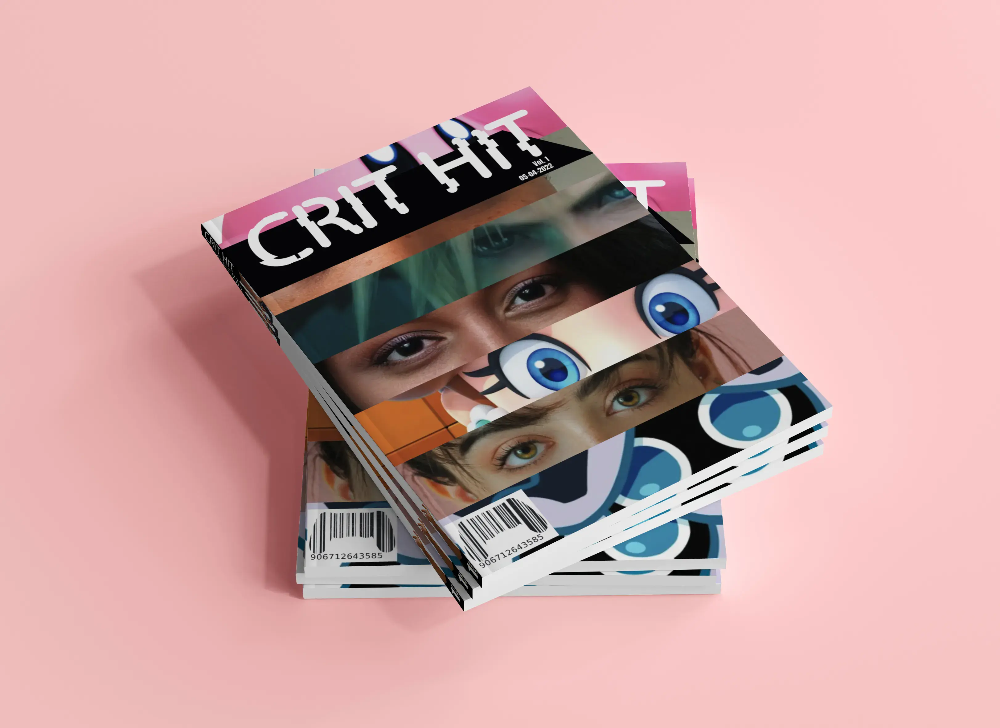
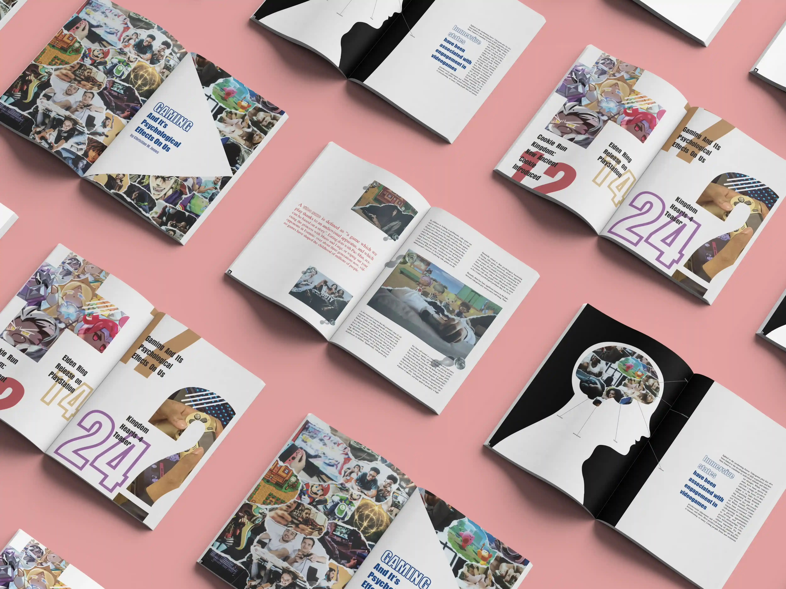
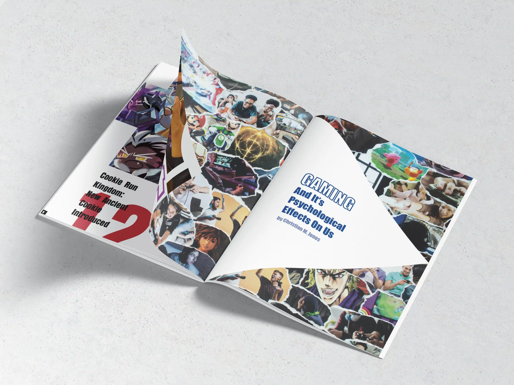
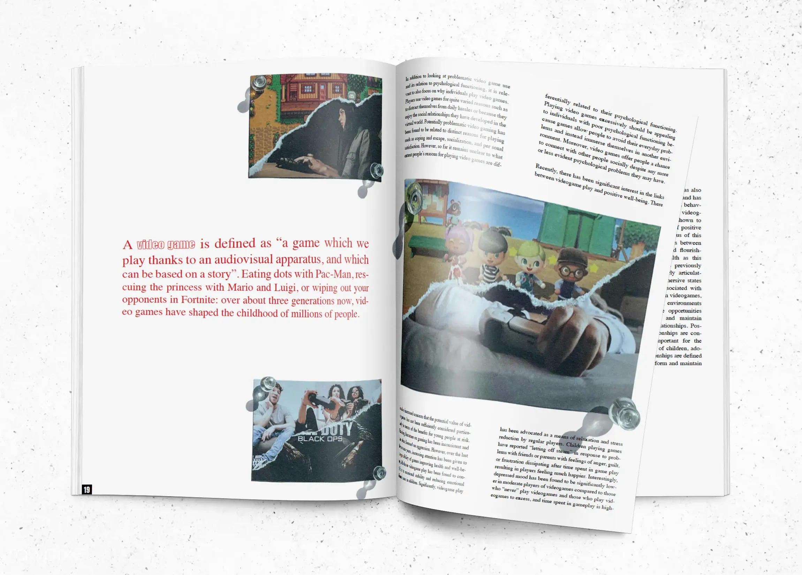
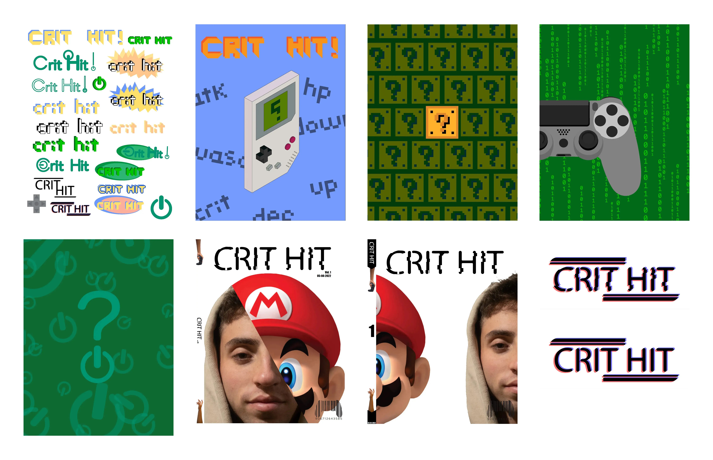
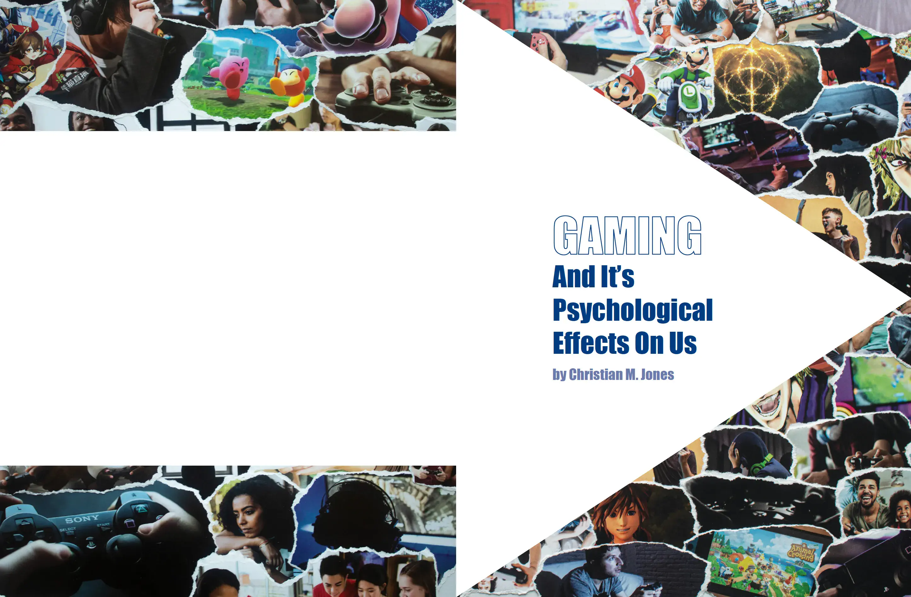
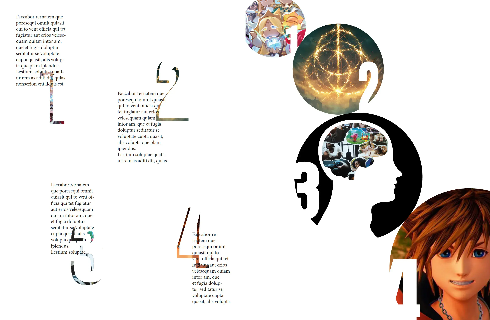

-
Crit Hit
-
Book Design
-
Photoshop, InDesign
-
About
-
Crit Hit is a gaming magazine focused on the psychological effects of gaming. The name is borrowed from gaming
vernacular (a critical hit) so the magazine feels like it was made by gamers, for gamers, rather than about them.
The layout uses a loose grid that gives imagery room to breathe, pushing back against the dense aesthetic common
in gaming publications. The typography is set in Times New Roman, signaling that this is a magazine worth reading
slowly.




Concept / Assets


